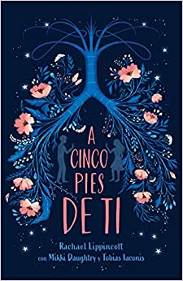

Num mundo dividido uma muralha mágica separa duas espécies. De um lado, os feéricos vivem dentro de suas fronteiras cheias de beleza e mistério; do outro, os humanos possuem apenas medo, desconfiança e dificuldades.
Feyre, filha de um casal de mercadores humanos e falidos, se torna caçadora para sustentar a família. Dura como as flechas que carrega, letal como sua pontaria, ela abandona as fantasias de garota e as troca pela árdua vida nas florestas ao redor de sua aldeia.
Sua única alegria é observar as cores e sonhar em capturá-las. Mas, na floresta, coberta de neve tudo é branco e árido; como o ódio pelos feéricos que carrega no coração; Como as telas que não pode comprar ou colorir. Até que um enorme lobo cruza seu caminho... Sem hesitar, Feyre dispara... uma flecha. Um ato de rebelião.
Após matar o lobo, uma criatura bestial surge exigindo uma reparação. Arrastada para além do muro, para uma terra mágica e traiçoeira - que ela só conhece por meio de lendas -, a jovem descobre que seu captor não é um animal, mas Tamlin, Grão Senhor da Terra Primaveril. Um feérico com um segredo, escondido sob uma máscara. Ela descobre ainda que o então animal que havia assassinado era, na verdade, uma criatura mágica, uma fada zoomórfica transformada em lobo.
À medida que ela descobre mais sobre este mundo onde a magia impera, seus sentimentos por Tamlin passam da mais pura hostilidade até uma paixão avassaladora. Enquanto isso, uma sinistra e antiga sombra avança sobre o mundo das fadas e Feyre deve provar seu amor para detê-la ou Tamlin e seu povo estarão condenados.
A Biblioteca da Meia-Noite
Aos 35 anos, Nora Seed é uma mulher cheia de talentos e poucas conquistas. Arrependida das escolhas que fez no passado, ela vive se perguntando o que poderia ter acontecido caso tivesse vivido de maneira diferente. Após ser demitida e seu gato ser atropelado, Nora vê pouco sentido em sua existência e decide colocar um ponto final em tudo. Porém, quando se vê na Biblioteca da Meia-Noite, Nora ganha uma oportunidade única de viver todas as vidas que poderia ter vivido.
Neste lugar entre a vida e a morte, e graças à ajuda de uma velha amiga, Nora pode, finalmente, se mudar para a Austrália, reatar relacionamentos antigos – ou começar outros –, ser uma estrela do rock, uma glaciologista, uma nadadora olímpica... enfim, as opções são infinitas. Mas será que alguma dessas outras vidas é realmente melhor do que a que ela já tem?

A 5 Passos De Você
Stella Grant gosta de estar no controle. Ela parece ser uma adolescente típica, mas em sua rotina há listas de tarefas e inúmeros remédios que ela deve tomar para controlar a fibrose cística, uma doença crônica que impede que seus pulmões funcionem como deveriam. Suas prioridades são manter seus pais felizes e conseguir um transplante – e uma coisa não existe sem a outra. Mas para ganhar pulmões novos, Stella precisa seguir seu tratamento à risca e eliminar qualquer chance de infecção, o que significa que ela não pode ficar a menos que dois metros de distância – ou seis passos – de outros pacientes com a doença. O primeiro item é fácil para ela, mas o segundo pode se provar mais difícil do que ela esperava.
O único controle que Will Newman deseja é o de sua própria vida. Ele não dá a mínima para o novo tratamento experimental para o qual foi selecionado e não aguenta mais a pressão de sua mãe para que melhore. Prestes a completar dezoito anos, ele mal pode esperar para finalmente se livrar das máquinas e hospitais, usando o pouco de vida que ainda lhe resta para conhecer o mundo. Stella e Will são muito diferentes. Ao mesmo tempo, a doença que os une não é a única coisa que têm em comum. Eles têm que ficar a cinco passos um do outro, mas, conforme a conexão entre os dois aumenta, a vontade de burlar a distância física parece insuportável. Um grande amor vale um passo roubado
A Rainha Vermelha
O mundo de Mare Barrow é dividido pelo sangue: vermelho ou prateado. Mare e sua família são vermelhos: plebeus, humildes, destinados a servir uma elite prateada cujos poderes sobrenaturais os tornam quase deuses. Mare rouba o que pode para ajudar sua família a sobreviver e não tem esperanças de escapar do vilarejo miserável onde mora. Entretanto, numa reviravolta do destino, ela consegue um emprego no palácio real, onde, em frente ao rei e a toda a nobreza, descobre que tem um poder misterioso… Mas como isso seria possível, se seu sangue é vermelho? Em meio às intrigas dos nobres prateados, as ações da garota vão desencadear uma dança violenta e fatal, que colocará príncipe contra príncipe - e Mare contra seu próprio coração.